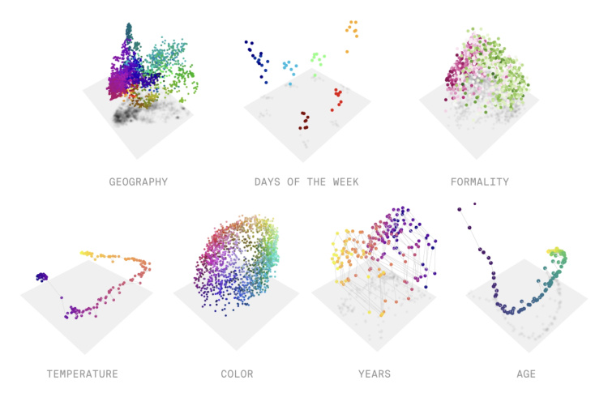
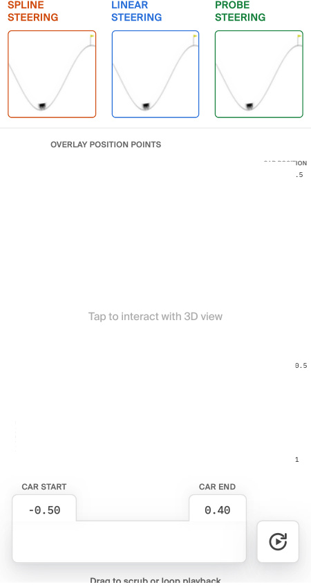
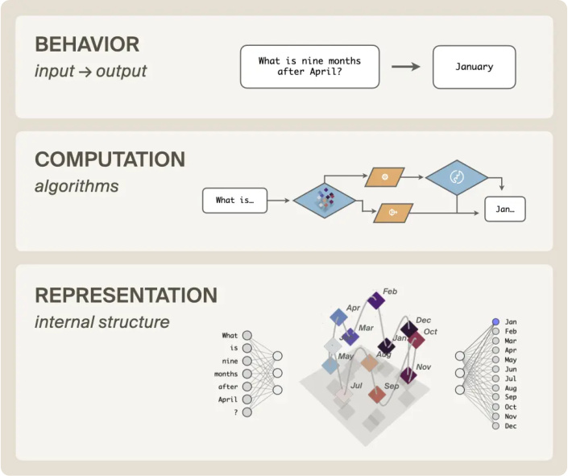
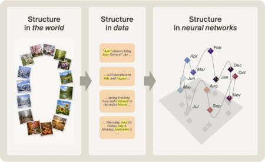
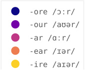
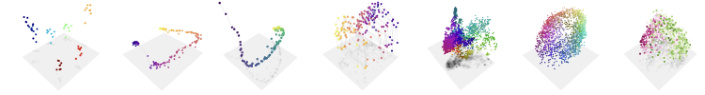

The World Inside Neural Networks
How neural geometry will unlock understanding and control of AI

AUTHORS
PUBLISHED
Atticus Geiger* Ekdeep Singh Lubana* Thomas Fel* Jack Merullo* Michael Jae Byun*
May 7, 2026
Owen Lewis*
Tom McGrath*
Correspondence to atticus@goodfire.ai,
ekdeep@goodfire.ai
Our world is full of objects and richly structured geometric relationships—the color wheel, road networks, family trees, months of the year—and humans use structured mental concepts to represent and navigate this complex reality[1] .
We also know that the inner world of neural networks is full of structure that reflects the structure of the outer world. This is true across models, modalities, and domains: In the internal representations of language models, numbers[2] , days of the week, and months of the year[3] are circular loops, and smooth curves represent the years in history[4] and characters in a line of text[5] . In image models, objects' spatial arrangement is recapitulated in activation space[6] and colors are represented on smooth surfaces structured by hue, saturation, and lightness[7] . In a genomic model, the entire tree of life lies on a complex manifold[8] , and we discovered a previously-unknown class of Alzheimer's biomarkers as a clean curve in an epigenomic model[9] . At this point, the evidence for curved geometric structure inside neural networks is abundant and undeniable[10] .
We believe this "neural geometry" is a crucial frontier in understanding, improving, and controlling models. If we understand how a model carves up and represents the world conceptually (i.e., its ontology), this will unlock a far deeper understanding of both its algorithms that operate over that ontology and the intelligent behaviors produced by those algorithms. We thus need new methods to gain that understanding; this series of posts details our early efforts to develop them, building upon – and alongside – numerous related efforts from others.[11]
While we are deeply driven by curiosity about these questions in their own right, we also know that, historically speaking, the pursuit of fundamental scientific knowledge yields great practical utility. More concretely, we see clear and impactful applications of interpretability opening up—extracting scientific knowledge from foundation models,[12] and intentional design of better, safer models[13] —and believe neural geometry can unlock the holistic understanding and fine-grained, robust control needed to power them.
CONTENTS
A simple example of how neural geometry unlocks control Representation, computation, and behavior Where does neural geometry come from? What about sparse autoencoders? Conclusion
A simple example of how neural geometry unlocks control
Mountain Car position steering. The car's position ranges from −1.2 (left wall) to +0.5 (goal flag). Each point in the 3D scatter is a CNN encoder embedding (64-dim, projected via PCA). The spline follows the learned data manifold; the linear path is a straight line through embedding space; the probe path steps along the direction of a linear probe trained to recover position. Displayed frames are softmax-blended over the 20 nearest neighbors — sharp frames indicate onmanifold steering, blurry frames indicate off-manifold regions with no nearby real states.

SPLINE LINEAR PROBE
STEERING STEERING STEERING
OVERLAY POSITION POINTS
CAR POSITION
0.5
0
Tap to interact with 3D view
-0.50 -0.5
-1
CAR START CAR END
-0.50 0.40
Drag to scrub or loop playback
To give a peek into the inner world of a neural network, let's start with a simple example where we simulate data grounded in the laws of physics.
We start by training a simple image-action model on the classic RL environment 'mountain car', where the goal is to get a car in a valley to the top of a hill.[14] The model is trained to predict the next frame given the current state (the car's position and momentum) and a random input action (whether to accelerate left or right). The trained image-action model is a world model of the mountain car that is optimized to predict future states of this simulated physical system.
To reveal how the image encoder represents the position of the car, the plot above visualizes the embedding vectors (colored dots) from images with the car at different positions. The embedding vectors form an obvious string-like structure, where nearby positions along the string correspond to images with the car in nearby positions. The natural hypothesis is that this structure is how the model represents the position of the car.
To test this hypothesis, we perform "brain surgery" on the model to see if changing the position on the piece of string causes the predicted image to change the position of the car. First, we fit a one-dimensional manifold (a smooth curve) to describe the piece of string. Then, we intervene on the hidden activations to "steer" the representation along the manifold. The result validates our hypothesis; the car moves smoothly up and down the hill!
The more typical way to steer representations is to create a linear steering vector by taking differences in activations between contrasting pairs[15] . For example, to create a steering vector that represents truthfulness, we might average the embeddings from several true statements and subtract the embeddings from several similar-but-false statements. Linear models[17] are a popular and surprisingly powerful approach[16] ! If the underlying geometry of truthfulness is linear, these steering vectors will work robustly; however, if it's more complex, then they will fail — either having no effect or making the model incoherent.
We can see a clear example of incoherence in our mountain car example: taking a linear path between positions crosses through states where the model's output becomes garbled — there seem to be large 'voids' in activation space that the model can't handle. Some of these linear paths actually intersect with a different valid activation, leading to the car teleporting to the corresponding location!
This simple example gives us a concrete glimpse of our point from the beginning of this post: neural networks often do not represent the world as a set of clean, linear directions. Even when a model has learned a scalar concept like position, that concept may live on a curved manifold rather than along a straight line in activation space. By following the geometry, we can intervene in ways that are precise and effective; by ignoring it, we risk pushing the model into unnatural and incoherent states. To understand and control neural networks, we need tools that respect the shape of their internal representations.
For more on steering along lines vs. manifolds, see the next post in the neural geometry series.
Representation, computation, and behavior

Three levels of analysis in neural networks.[18]
The power of neural geometry lies in its ability to help us precisely understand and manipulate three levels of structure in neural networks: representations, computations, and behavior.
Computation consumes and produces representations: data structures (stacks, lookup tables, etc.) represent information, and operators (push, pop, read, write, etc.) compute new data structures from the old. Therefore, we cannot fully understand computation without understanding representation. Imagine trying to figure out how a laptop sorts a list of numbers without knowing what bits are! You could make progress, but complete knowledge would be fundamentally out of reach.
We have made progress in understanding neural network computation[19] , but geometric structures are the data structures of neural networks and therefore necessary to fill out the picture. Only together can the two halves of representation and computation illuminate the intelligent behaviors of neural networks.
If we fully understood both representation and computation, then we could know exactly when models will fail, debug them if they do, evaluate and audit them with confidence, reshape their training, and generally build them with less mystery and more engineering. Understanding neural geometry is on the critical path to this ambitious vision.
Where does neural geometry come from?

Concepts do not appear in neural network internals by magic; they arise from the structure of the world reflected in training data.
How does all this conceptual structure end up inside of neural networks?
The datasets used to train neural networks come from the world. Whether it's Reddit posts or a simulation of a car rolling down a hill, all data is downstream of our heavily structured reality. Neural networks are trained to model massive amounts of such data using a large, but finite, set of parameters. This optimization pressure forces the network to develop an inner world with a panoply of beautiful geometries that recapitulates the structure of the outer world. We cannot understand neural networks without understanding this process.[20]
Take the months of the year: in the world, months form a cycle, where January is near February and December, but far from June and July. That structure leaves statistical traces in text: nearby months tend to appear in similar contexts. During training, a language model is optimized to capture these regularities efficiently and thus the model's internal representations recapitulate the geometry of the underlying concept—in this case, arranging months in a cyclic structure.[21] Neural network computations are performed over such representations, ultimately producing the output behavior incentivized by training.
What about sparse autoencoders?
MANIFOLD: SLANT RHYMES WITH -ORE

-ore /ɔːr/
-our /aʊər/
-ar /ɑːr/
-ear /ɪər/
-ire /aɪər/
A subspace of slant rhymes with "-ore". Perfect rhymes like "door" are on one end (dark blue), near-rhymes like "car" are further out, and poor rhymes like "wire" are at the other end (yellow).
In the introduction to this piece, we gave several examples of geometric structure that emerge simply from training neural networks on natural language or images. In fact, the banner below the title shows manifolds from real language models that we've been using as test cases for an unsupervised pipeline, which we'll detail in forthcoming work.
The figure above was discovered using this unsupervised pipeline. Not only can we find structure in activation space (this manifold is populated with similar sounding rhyming words, e.g., fire and higher or near and dear), but this structure gives us a much cleaner picture of what's going on compared to the popular approach of using sparse autoencoders (SAEs)[22] .
Listed below are the SAE features (directions in activation space) that reconstruct the manifold. Automated interpretability labels[23] of these SAE features identify only properties local to a point on the curve, which misses out on the underlying meaning of the manifold: words' phonological endings. That is, SAE features tend to "shatter" manifolds into many small and apparently-unrelated pieces, obscuring the overarching semantic structure that becomes clear when the manifold is viewed as a whole. We'll discuss this phenomenon — and how you can actually reconstruct manifolds from SAE features — in a future post of this series.
SAE FEATURES ON SLANT RHYME MANIFOLD
2478 : Words beginning with "Hor"
3596 : The word "correlation" and closely related statistical corr
4583 : Words related to absorption/absorbance (absorb, absorption,
4596 : The token "Horde," especially in gaming or fantasy contexts
4806 : Words beginning with or containing the prefix "Port"
5316 : Human evolutionary history, especially ancestors, hunter-ga
6440 : Words beginning with "import-" (important, importantly, imp
7471 : Legal opinion party labels like "Petitioner," "Appellant,"
9514 : Words and names beginning with "Sor-"
10637 : Occurrences of the word "Corporate" in titles, headings, an
12145 : Words beginning with the prefix "morph" (e.g. morphology, m
12714 : Token 'Nor' starting words, especially names and Norwegian/
17398 : Tokens starting with "Mor" (e.g. names/words like Morris, M
20283 : Words or names containing the substring "or," especially un
21241 : Boundaries between adjacent XML/HTML tags, especially closi
22084 : Tokens starting with "Por"/"por", especially at the beginni
23104 : Tokens containing or beginning with "Horn" (e.g., Hornby, H
23118 : Geometry descriptions involving triangle sides and right tr
24140 : Proper names and places containing the syllable "tor" or "k
25233 : Scientific paper sentences where "we" introduces an experim
28555 : Word-initial token fragment "Cor" in names and words
31648 : Words or names beginning with "Marg"
31747 : Tokens starting with "Dor" in names, places, and words
As the saying goes: all models are wrong, but some are useful. SAEs are valuable tools despite their limitations, particularly in their ability to break down a model into features at scale in an unsupervised way. But in order to more deeply and precisely understand and control neural networks, we'll need new methods — supervised and unsupervised — that respect neural geometry.[24]
Conclusion
Neural networks have structured inner worlds with geometry that reflects the structure of reality. By developing theories and methods that respect neural geometry, we will unlock deeper interpretability, more reliable control, and safer, better AI.
Many have claimed that understanding the "black box" internals of neural networks seems impossible. We believe that developing this understanding is more than just possible: it is the greatest scientific challenge, and opportunity, of today.
While developing the theory of evolution, Darwin remarked: "My mind seems to have become a kind of machine for grinding general laws out of large collections of facts". Previously we simply didn't have a large enough collection of facts, nor the ability to collect them. With increasingly capable research agents, armed with better tools rooted in neural geometry, we will soon have a way to collect the right empirical data at scale— and can turn our minds to grinding out the general laws of thought.
THE NEURAL GEOMETRY SERIES
NEXT Steering Along Manifolds →

Citation
Geiger et al., "The World Inside Neural Networks", Goodfire Research, 2026.
BibTeX:
@article{geiger2026world,
author = {Geiger, Atticus and Singh Lubana, Ekdeep and Fel,
title = {The World Inside Neural Networks},
journal = {Goodfire Research},
year = {2026},
month = {May},
note = {https://www.goodfire.com/research/the-world-inside-
}